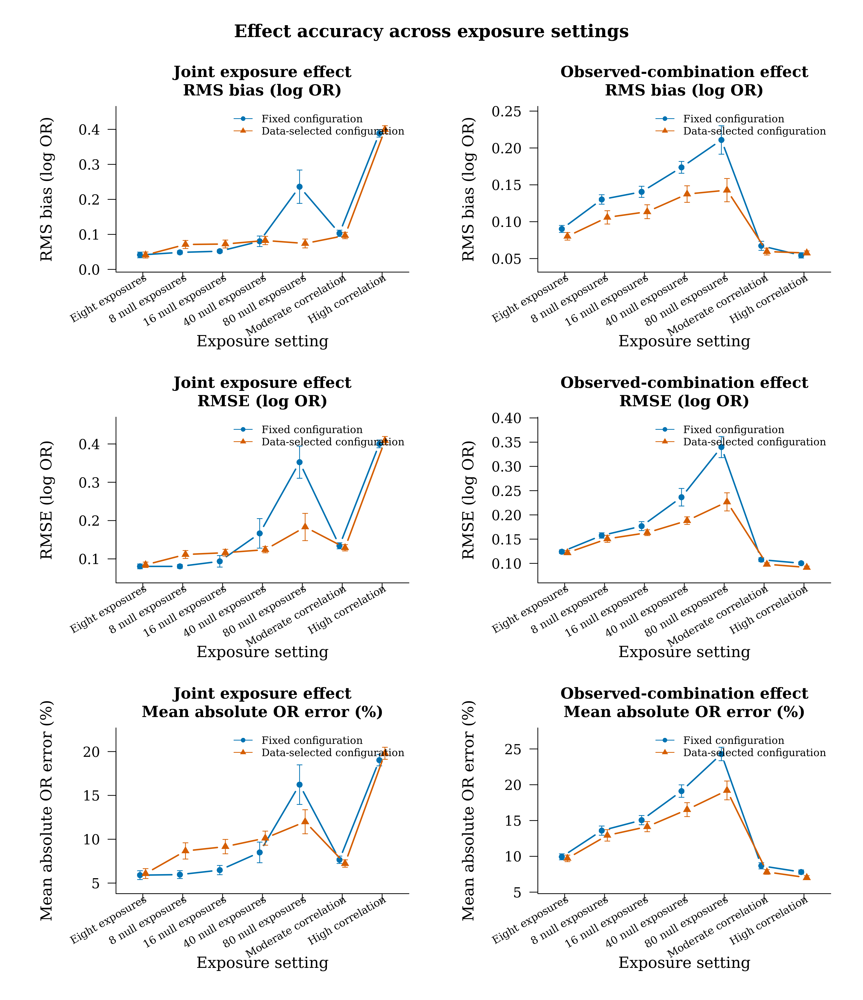
Fixed and data-selected strategies use matched final samples. Error bars, where available, are 95% Monte Carlo intervals across independent repetitions. Coverage refers to nominal pointwise 95% intervals.
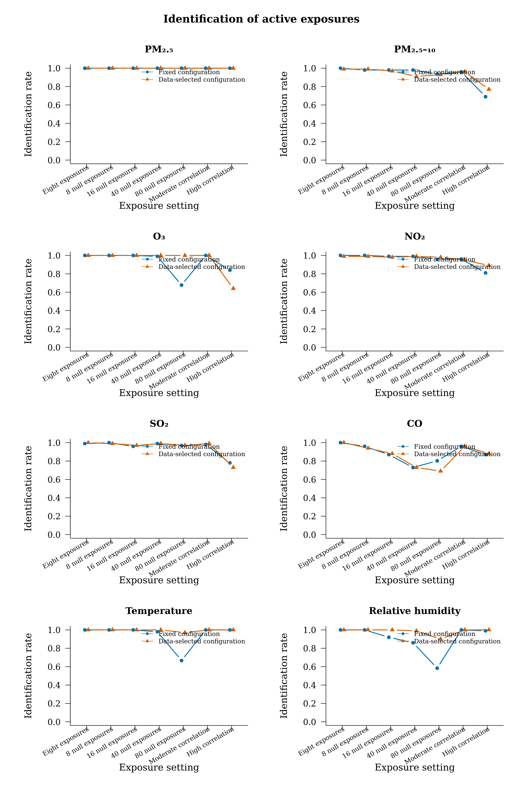
Identification rates compare the fixed and adaptive procedures for each of the eight active exposures. Variable-level Wilson intervals and available repetitions are tabulated.
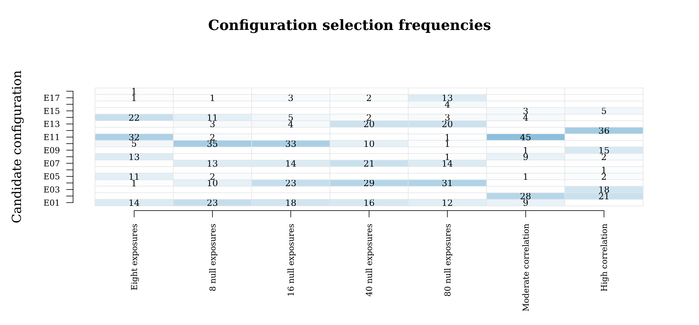
Cell values are percentages of available selection records. Candidate definitions are in Table_E_candidates.
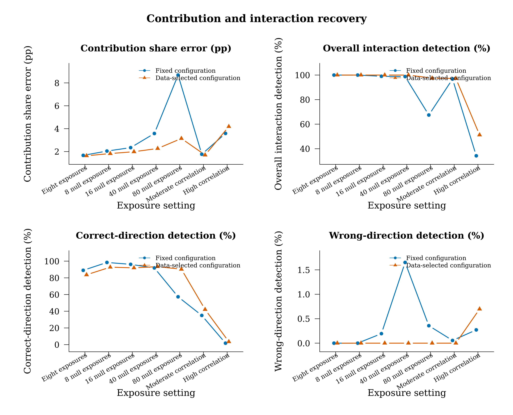
Contribution error uses the mean repetition-level RMSE of percentage shares across the eight prespecified active exposures at the reference background. Detection rates use the specified Holm corrections.
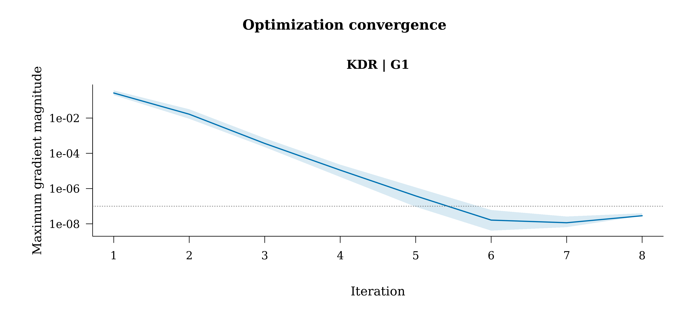
The line is the median gradient magnitude at each recorded iteration; shading is the 10th to 90th percentile range among fits reaching that iteration. The horizontal line is the stopping gradient tolerance. Different objective functions are shown in separate panels.
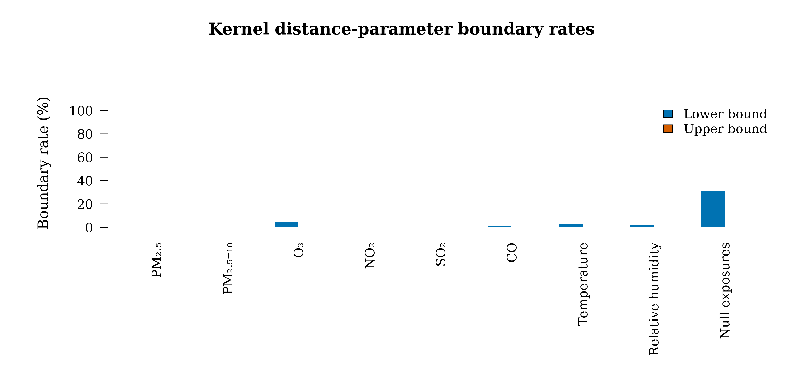
Rates summarize unique fitted kernels. The null-exposure bar pools all null-variable parameters. These numerical diagnostics describe fitted smoothness and are separate from the variable significance tests.
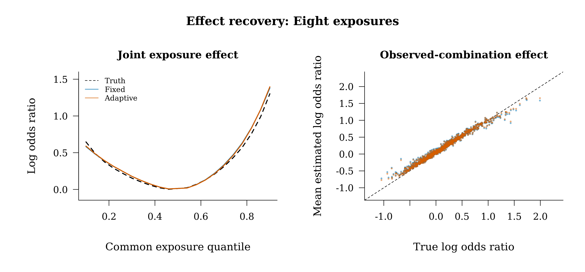
Dashed black denotes truth or the identity line. Colored curves/points show repetition-mean estimates. These display recovery under the chosen procedure; pointwise interval calibration and repetition variability are tabulated separately.
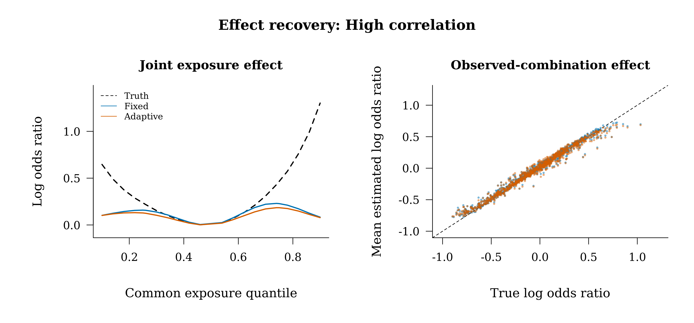
Dashed black denotes truth or the identity line. Colored curves/points show repetition-mean estimates. These display recovery under the chosen procedure; pointwise interval calibration and repetition variability are tabulated separately.
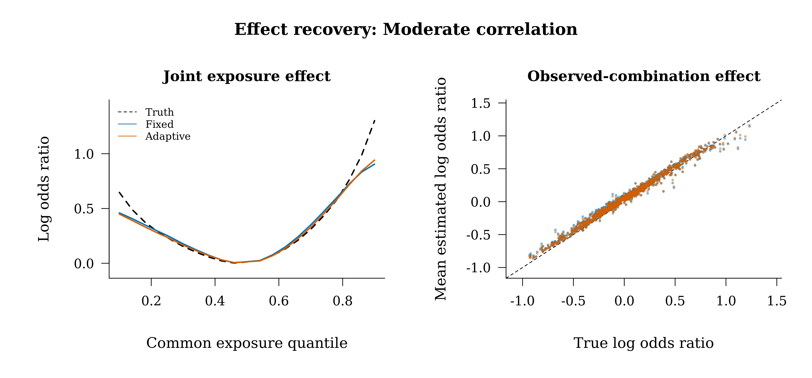
Dashed black denotes truth or the identity line. Colored curves/points show repetition-mean estimates. These display recovery under the chosen procedure; pointwise interval calibration and repetition variability are tabulated separately.
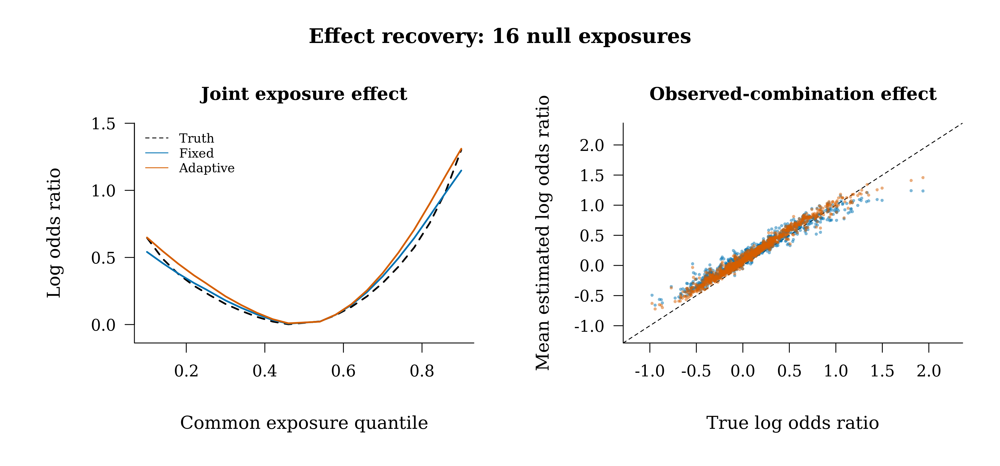
Dashed black denotes truth or the identity line. Colored curves/points show repetition-mean estimates. These display recovery under the chosen procedure; pointwise interval calibration and repetition variability are tabulated separately.
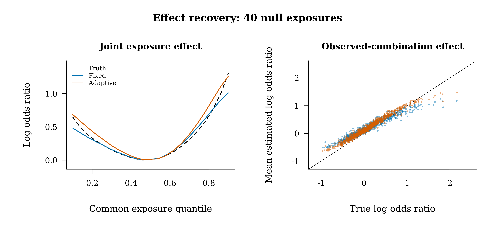
Dashed black denotes truth or the identity line. Colored curves/points show repetition-mean estimates. These display recovery under the chosen procedure; pointwise interval calibration and repetition variability are tabulated separately.
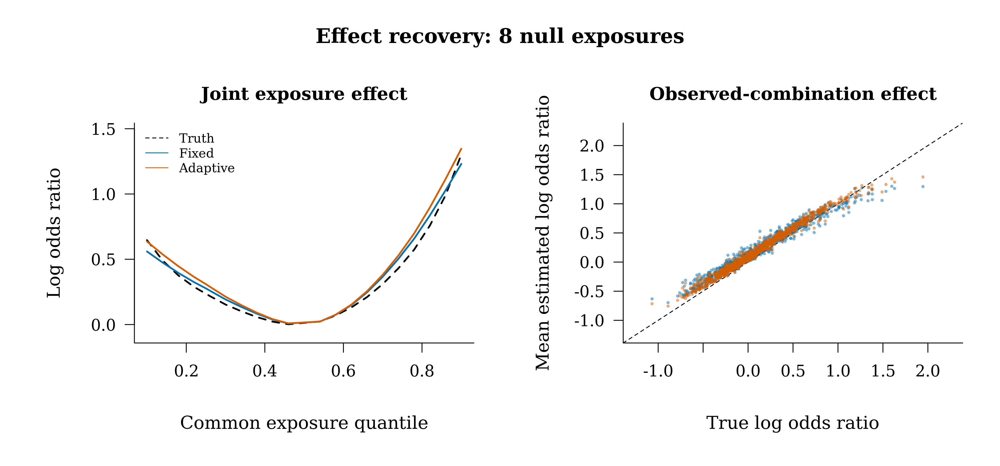
Dashed black denotes truth or the identity line. Colored curves/points show repetition-mean estimates. These display recovery under the chosen procedure; pointwise interval calibration and repetition variability are tabulated separately.
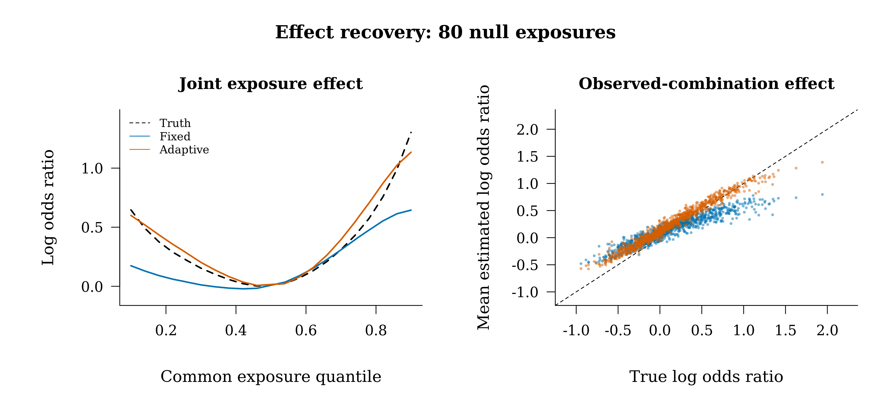
Dashed black denotes truth or the identity line. Colored curves/points show repetition-mean estimates. These display recovery under the chosen procedure; pointwise interval calibration and repetition variability are tabulated separately.
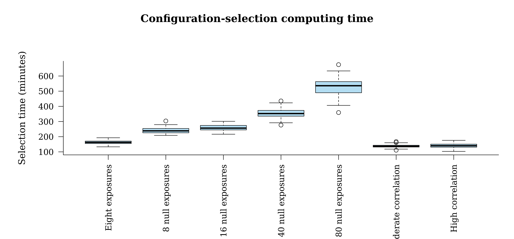
Boxplots show selection elapsed time in minutes across completed independent repetitions. Checkpoint reuse can shorten resumed tasks.
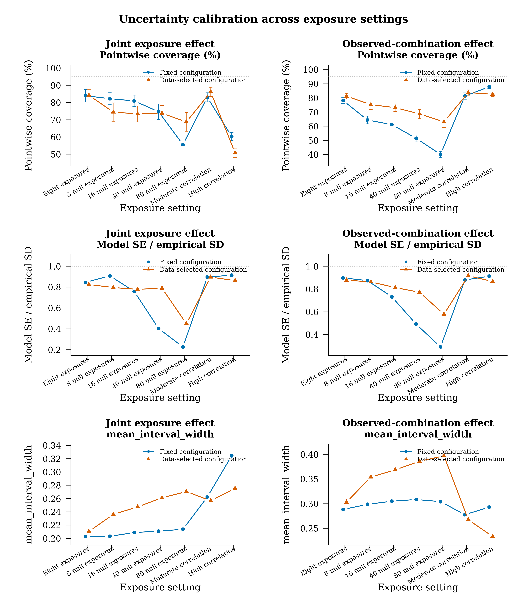
Fixed and data-selected strategies use matched final samples. Error bars, where available, are 95% Monte Carlo intervals across independent repetitions. Coverage refers to nominal pointwise 95% intervals.
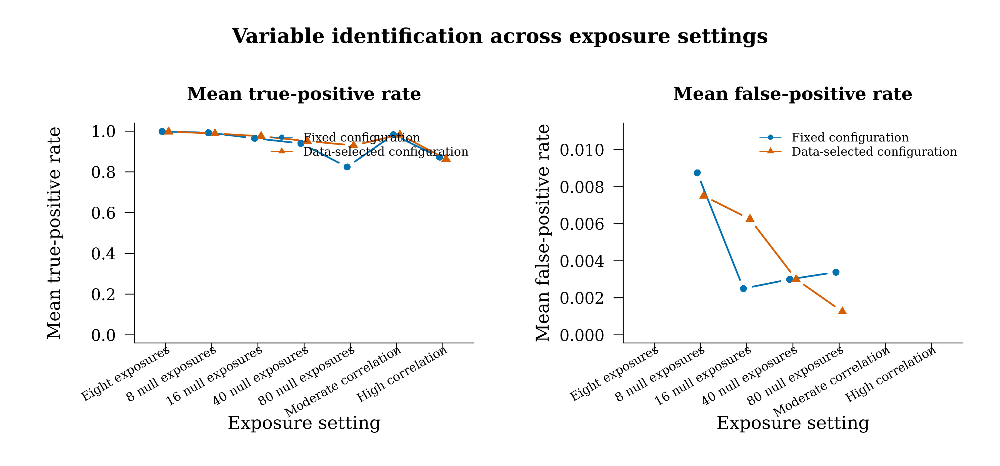
Mean true-positive and false-positive rates compare the two strategies. Only settings with defined false-positive rates appear in that panel.
Rates use complete usable variable-test repetitions. Humidity acts through interaction. Wilson intervals quantify Monte Carlo uncertainty.
Each scenario uses new independent repetitions. Both strategies use identical final-estimation data. Completed records include recorded failures; usable estimates, intervals and tests have separate denominators.
N and L are final-estimation and independent kernel-learning matched-set counts. M, kappa and lambda are selected by the minimum pooled held-out conditional negative log likelihood. The frozen configuration is always included. Three validation folds each use two-thirds of the configuration pool for estimation. The independent kernel-learning pool is common to all folds.
Selection success requires at least one candidate with finite validation scores in every fold. Fallback denotes use of the frozen configuration after all candidates failed. The paired final performance includes this prespecified fallback. Elapsed component times reflect checkpoint reuse when a task is resumed.
Fixed and adaptive results use common evaluation combinations and references. Contribution shares normalize mean absolute baseline-Shapley values within the eight prespecified active exposures, with all additional coordinates fixed at their reference values. Overall interactions use Holm across four pairs; corrected directions use Holm across all evaluated grid contrasts. Quantitative contrasts use the log-OR scale for error and exponentiation for OR limits. Repetition-specific selected parameters are in Table_E_choices.
Fixed and adaptive results use common evaluation combinations and references. Contribution shares normalize mean absolute baseline-Shapley values within the eight prespecified active exposures, with all additional coordinates fixed at their reference values. Overall interactions use Holm across four pairs; corrected directions use Holm across all evaluated grid contrasts. Quantitative contrasts use the log-OR scale for error and exponentiation for OR limits. Repetition-specific selected parameters are in Table_E_choices.
RMS bias is the root mean squared pointwise bias across independent repetitions; RMSE averages squared errors over repetitions and evaluation points. Errors use log OR; absolute relative OR error is 100*abs(exp(estimate-truth)-1). Empirical and model SE use RMS aggregation. Intervals condition on the independently learned kernel and selected configuration. The empirical evaluations include configuration selection variability. Selection never uses these truth-based metrics.
Per-fit times cover learning, nuisance estimation and final inference components. Configuration selection costs are recorded separately in Table_E_choices. Shared kernel costs are reused. Memory sampling availability depends on the platform.
Squared Mahalanobis distances use the eight active-exposure coordinates and an independent scenario evaluation sample. The reference is its empirical 95th percentile. This is a geometric description of extrapolation along the common joint path.
Positive distance parameters control Gaussian kernel smoothness. Bound indicators use a 1e-6 tolerance on the log scale. Null variables have their own distance parameters.
Each independent kernel initialization reports its objective, projected gradient, optimizer status and bound hits. Shared kernels appear once rather than once per nuisance scenario.
One row per planned fit. Point convergence, interval availability, interpretation availability and recorded errors are separate fields. Penalized convergence is assessed by the objective gradient and scaled step; the unpenalized equation residual is reported alongside it.
Fixed and adaptive results use common evaluation combinations and references. Contribution shares normalize mean absolute baseline-Shapley values within the eight prespecified active exposures, with all additional coordinates fixed at their reference values. Overall interactions use Holm across four pairs; corrected directions use Holm across all evaluated grid contrasts. Quantitative contrasts use the log-OR scale for error and exponentiation for OR limits. Repetition-specific selected parameters are in Table_E_choices.
Differences are adaptive minus fixed within the same repetition, restricted to pairs with both available values. Negative RMSE and OR-error changes favor adaptive selection. Positive coverage and correct-direction detection changes indicate increases. The table reports mean repetition-level changes; aggregate RMS bias and pooled RMSE appear in the effect-performance table.
Fixed and adaptive results use common evaluation combinations and references. Contribution shares normalize mean absolute baseline-Shapley values within the eight prespecified active exposures, with all additional coordinates fixed at their reference values. Overall interactions use Holm across four pairs; corrected directions use Holm across all evaluated grid contrasts. Quantitative contrasts use the log-OR scale for error and exponentiation for OR limits. Repetition-specific selected parameters are in Table_E_choices.
Fixed and adaptive results use common evaluation combinations and references. Contribution shares normalize mean absolute baseline-Shapley values within the eight prespecified active exposures, with all additional coordinates fixed at their reference values. Overall interactions use Holm across four pairs; corrected directions use Holm across all evaluated grid contrasts. Quantitative contrasts use the log-OR scale for error and exponentiation for OR limits. Repetition-specific selected parameters are in Table_E_choices.
Elapsed times are within-worker wall times. Selection includes learning and validation; final-pair time covers the paired final computations. Shared work and concurrent execution make their sum different from whole-study wall time. Resumed tasks can have reduced times.
Frequencies use available selection records in each scenario and include the explicitly recorded fallback rule. Planned repetitions and availability are tabulated separately.
TPR and FPR are averaged over complete usable repetitions after Holm correction. FPR is undefined when the null count is zero. Monte Carlo intervals use whole-repetition rates.